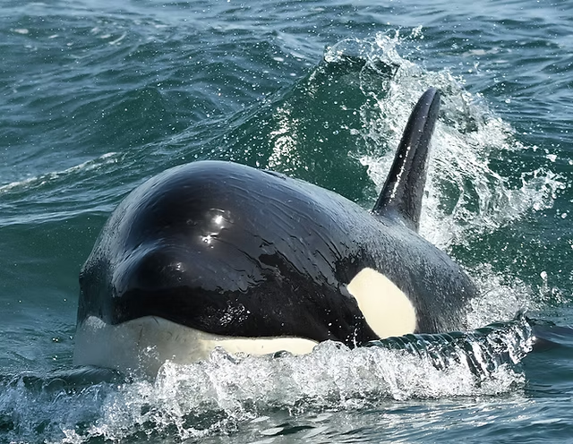

Orcas are apex predators with a diverse diet. Individual populations often specialize in particular types of prey.
Their sophisticated hunting techniques and vocal behaviors, often specific to a particular group and passed along from generation to generation, are considered to be manifestations of animal culture.
